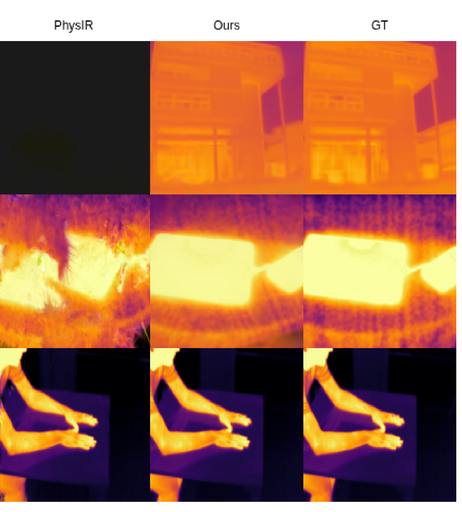
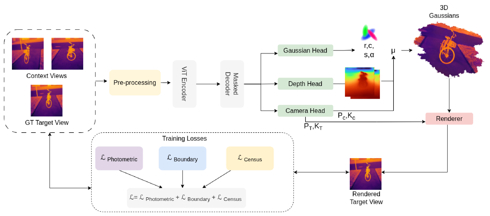
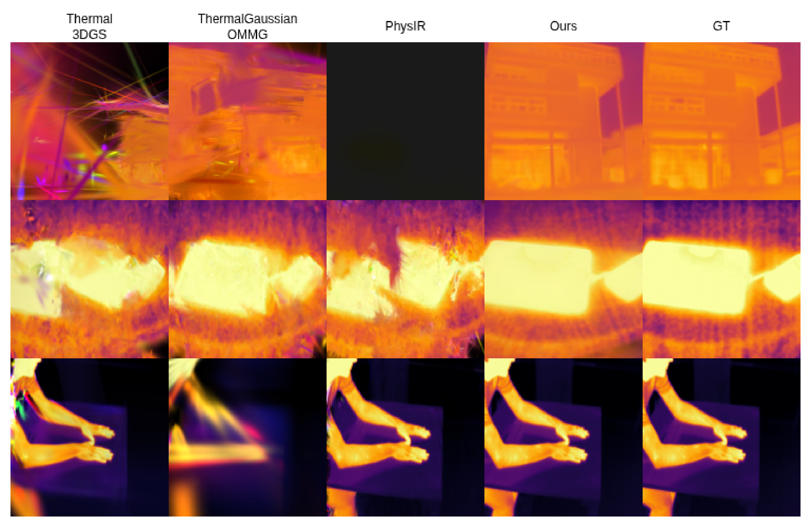
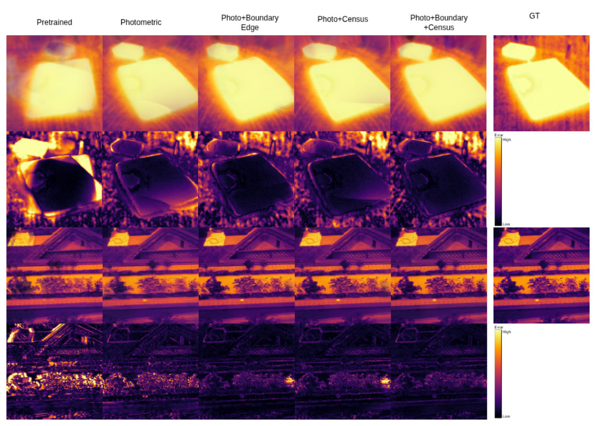

Generalizable Pose-Free Gaussian Splatting for Sparse-View Thermal 3D Reconstruction

Reconstructs 3D scenes from as few as two unposed thermal images in a single 80 ms forward pass — no camera poses, no RGB guidance, no per-scene optimization.
A boundary structure loss preserves sharp temperature discontinuities while a soft census loss enforces brightness-invariant local structure — tackling low texture and view-dependent emissivity head on.
Trained on an aggregated corpus of five public thermal datasets spanning indoor, outdoor, and aerial scenes — it reconstructs entirely unseen scenes in one pass, with no fine-tuning.
Thermal infrared imaging is vital for applications like search-and-rescue and autonomous navigation, yet translating it into 3D scene representations remains a critical bottleneck. The low-texture nature and view-dependent emissivity of thermal images cause standard pose estimators to fail catastrophically, collapsing standard 3D Gaussian Splatting pipelines under sparse-view constraints. Furthermore, existing thermal reconstruction methods rely heavily on dense capture and computationally expensive per-scene optimization — and critically, many depend on aligned RGB-thermal datasets to obtain reliable camera poses and initial point clouds, rendering them unusable in purely thermal, unposed environments. To break this bottleneck, we present ThermalSplat, the first generalizable, feed-forward Gaussian splatting framework that reconstructs 3D scenes directly from sparse thermal images without requiring known camera poses, RGB guidance, or per-scene training. We overcome thermal-specific challenges using a soft census loss for brightness-invariant structural matching and a boundary structure loss to explicitly supervise temperature discontinuities. Trained on an aggregated multi-source dataset, ThermalSplat synthesizes sharp reconstructions of unseen scenes in a single feed-forward pass. Extensive experiments demonstrate that ThermalSplat holds a strict advantage over scene-specific thermal splatting methods in the sparse regime, and achieves superior perceptual fidelity even against baselines operating under their ideal dense capture settings. By eliminating the need for computationally expensive per-scene optimization, ThermalSplat offers an efficient and generalizable approach to thermal 3D reconstruction.

Evaluated on six held-out thermal scenes — no training and test sequences share a capture session, so every metric measures genuine generalization. ThermalSplat operates strictly on two unposed input views.
| Method | Capture | PSNR ↑ | SSIM ↑ | LPIPS ↓ |
|---|---|---|---|---|
| Thermal3DGS | Dense (ideal) | 25.14 | 0.838 | 0.253 |
| ThermalGaussian* | Dense (ideal) | 26.02 | 0.869 | 0.241 |
| PhysIR | Dense (ideal) | 26.77 | 0.869 | 0.277 |
| Thermal3DGS | Sparse (2-view) | 11.89 | 0.489 | 0.547 |
| ThermalGaussian* | Sparse (2-view) | 15.16 | 0.643 | 0.458 |
| PhysIR | Sparse (2-view) | 19.03 | 0.715 | 0.419 |
| ThermalSplat (Ours) | Sparse (2-view) | 24.96 | 0.819 | 0.209 |
Mean over five held-out scenes (UAV6 excluded — it lacks the RGB data ThermalGaussian requires). Under extreme sparsity, per-scene optimization collapses, while ThermalSplat rivals methods running in their ideal dense capture setting.
| Method | PSNR ↑ | SSIM ↑ | LPIPS ↓ |
|---|---|---|---|
| MVSplat | 8.15 | 0.148 | 0.747 |
| MVSplat† | 16.97 | 0.602 | 0.456 |
| SPFSplat | 18.46 | 0.651 | 0.405 |
| SPFSplat† | 19.30 | 0.700 | 0.426 |
| NAS3R | 23.44 | 0.768 | 0.240 |
| NAS3R† | 24.34 | 0.785 | 0.220 |
| ThermalSplat (Ours) | 25.55 | 0.828 | 0.181 |
Mean over six held-out scenes. † denotes RGB-pretrained models explicitly fine-tuned on our aggregated thermal corpus — ThermalSplat still leads, confirming the value of thermal-adapted structural supervision beyond naive domain transfer.
| Method | 5° | 10° | 20° |
|---|---|---|---|
| NAS3R | 9.5 | 21.3 | 35.8 |
| NAS3R† | 7.7 | 21.5 | 38.6 |
| ThermalSplat (Ours) | 10.4 | 23.8 | 39.7 |
Overall pose AUC (%) at 5°, 10°, and 20° error thresholds.
| Method | Paradigm | Time ↓ |
|---|---|---|
| Thermal3DGS | Per-scene opt. | ~15 min |
| ThermalGaussian OMMG | Per-scene opt. | ~25 min |
| PhysIR | Per-scene opt. | ~15 min |
| ThermalSplat (Ours) | Feed-forward | 80 ms |
A single 80-millisecond forward pass replaces 15–25 minutes of per-scene training.

| Variant | PSNR ↑ | SSIM ↑ | LPIPS ↓ |
|---|---|---|---|
| Naive transfer (zero-shot) | 23.44 | 0.768 | 0.240 |
| Photometric only | 24.34 | 0.785 | 0.220 |
| + Census loss | 25.15 | 0.810 | 0.192 |
| + Boundary loss | 25.46 | 0.822 | 0.183 |
| Boundary + Census (full) | 25.55 | 0.828 | 0.181 |
The two structural losses are complementary: the boundary loss supervises the location of temperature boundaries, while the census loss enforces brightness-invariant local structure. Their combination yields the best reconstruction quality.
Qualitative error maps (ΔGT) confirm that perceptual accuracy is maximized and structural artifacts are minimized only when both complementary loss components are active during training — partial configurations exhibit boundary blurring and structural artifacts.

@inproceedings{thermalsplat2027,
title = {ThermalSplat: Generalizable Pose-Free Gaussian Splatting
for Sparse-View Thermal 3D Reconstruction},
author = {Anonymous},
booktitle = {Proceedings of the IEEE/CVF Winter Conference on
Applications of Computer Vision (WACV)},
year = {2027}
}